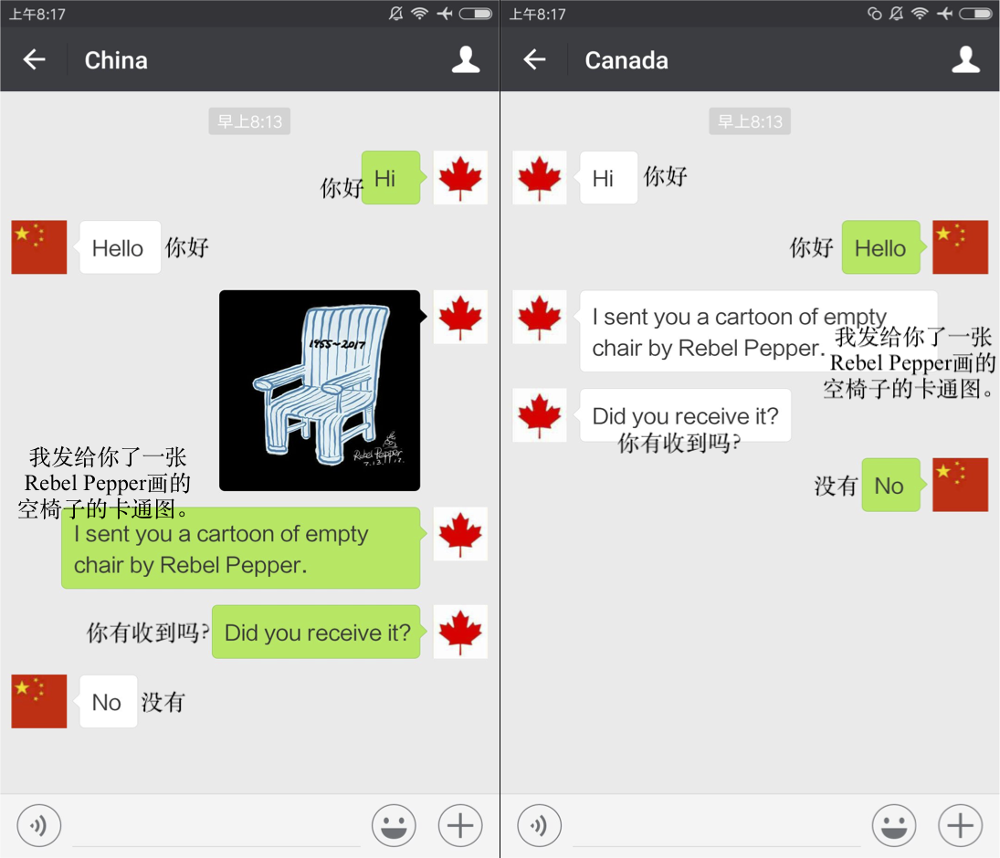
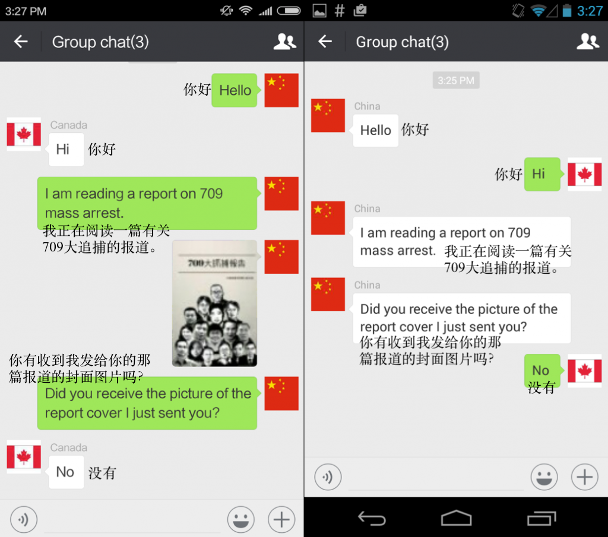
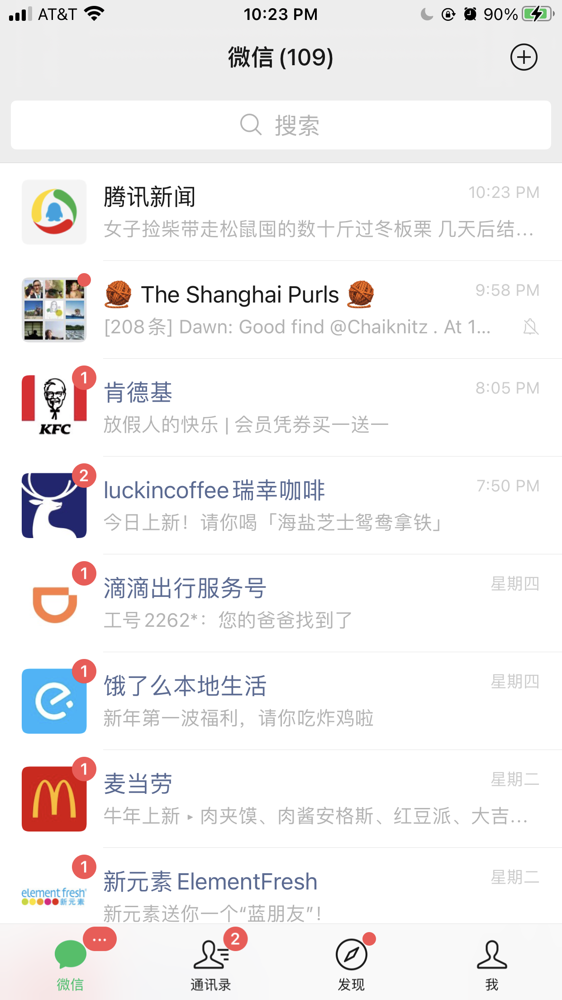
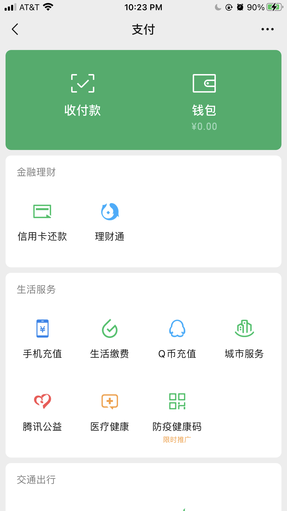
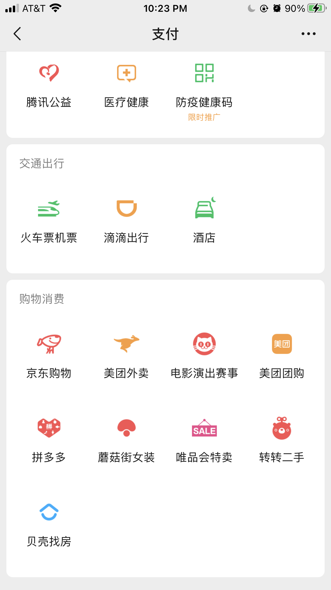

欢迎来到我们的中国互联网审查项目。我们的目标是通过分析公民实验室提供的有关微信平台上被审查关键词的数据，帮助专家和新手更好地了解中华人民共和国的在线审查机制。
公民实验室是多伦多大学蒙克全球事务与公共政策学院的跨学科实验室。更多相关信息请见公民实验室的主页网站。
众所周知，中国的“防火长城”(Great Firewall)阻止了许多西方公司接触中国大陆的用户。在中国大陆，如果没有连接虚拟专用网络(VPN)，就无法陆访问《纽约时报》、《BBC新闻》、《华盛顿邮报》、谷歌、脸书、推特、“快照“(Snapchat)和Instagram。然而在中国大陆，VPN也是非法的。许多身处中国之外的人并不知道，中国的互联网和社交媒体应用程序也受到中国政府的严格监控。在微信平台上，中国政府会对用户通过该应用发送的敏感关键词，短语和图像进行审查。
虽然关键字、关键词组合、图片、网址(URLs)在中国大陆的所有平台上均受到审查，但我们项目的重点研究对象是公民实验室收集整理的有关微信平台上的审查数据。公民实验室在微信平台上对一些已知的审查主题进行了测试。实验团队使用一个加拿大手机号码注册的微信账号向另一个中国大陆手机号码注册的微信账号发送敏感消息。团队发现，中国大陆的微信账号并未收到加拿大微信账号发来的包含敏感主题的微信消息(见下图)。完整的测试报告请见这里。
 
上述直方图显示了每个给定月份中被审查的关键字数量。2016年7月被审查关键词的数量很多，这可能是因为公民实验室的项目于2016年7月开始，所以这个月反映了已知被审查主题的积累，而不是新的被审查的关键词。该数据集可以在这里找到。
此树形图显示了被审查关键字所属的类别和子类别。通过该图我们可以发现，被审查的关键词通常是审查制度大策略中的一部分，而并非孤立事件。例如，我们的数据集表明，共产党领导者们的名字是最经常受到审查的对象之一。这点值得注意，因为对党内领导人名字的审查似乎比对许多具有争议性话题（如领土或人权问题）的审查更加频繁。（需要指出的的是以上树形图包含了数据集中的大多数但并非全部关键词/关键词组合。该数据集可以在这里找到。
颜色类别含义：
在中国境外，人们通过脸书、Instagram、“快照“、推特和Whatsapp与朋友和家人保持联系。同时，人们也使用Uber、Lyft、Uber Eats、Venmo、Cashapp等应用程序提供的其他服务。微信用户可以通过微信应用互发送消息，获取新闻，订购外卖，汇款，打车。微信用户也可以使用微信在商店付款。在中国大陆，人们生活的方方面面都离不开微信，微信也是人们联系彼此的首要方式。
  
微信的聊天功能与脸书的Messenger，苹果手机上的iMessage以及WhatsApp相同。微信用户可以将信息、图像和文件发送给使用该平台的其他用户。微信用户还可以将图片上传到“朋友圈”，该功能类似于将图片上传到Instagram或脸书的“故事”。通过微信支付、微信用户还可以订购外卖、支付电话费、预订酒店、预定出租车等。此外，微信用户可以直接从银行帐户将资金存入微信中的电子钱包。在中国大陆，几乎所有供应商都接受微信付款。当需要付款时，微信用户只需扫描供应商的QR码即可。